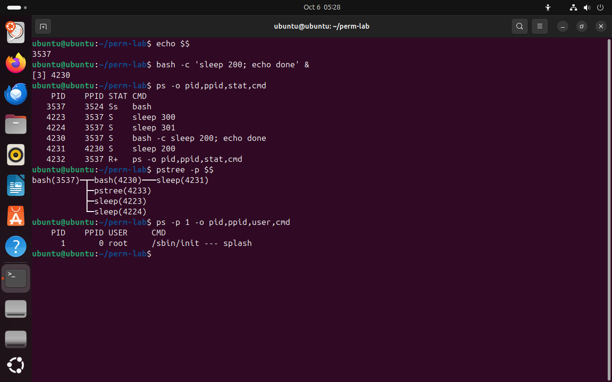

Часть 2 из 7
Родители и потомки: PPID и дерево процессов
В этой части разберём, как один процесс создаёт другой, что такое PPID, как выглядит дерево процессов и кто становится родителем процесса, если его родитель завершился.
2.1 Как появляется новый процесс
Новый процесс в Linux создаёт только другой процесс. Когда вы вводите в терминале sleep 5, оболочка bash делает два шага. Сначала она создаёт свою копию — системный вызов fork: появляется второй процесс bash с новым PID и той же памятью. Затем копия заменяет свою программу на sleep — вызов exec: PID остаётся прежним, а код и данные загружаются из /usr/bin/sleep. Исходная оболочка в это время ждёт завершения потомка, а затем снова выводит приглашение.
fork и exec похожи на работу с бланком: сначала делают копию бланка со всеми заполненными полями, а потом на копии стирают содержимое и вписывают новое. Номер у копии свой, а исходный бланк остаётся нетронутым.
Поэтому процесс наследует от родителя окружение: текущий каталог, переменные окружения, маску umask, открытые файлы. Всё это было в памяти копии до вызова exec и после него сохранилось. Поэтому /proc/PID/status на прошлом снимке показал маску 0002 — ту же, что у оболочки.
На схеме ниже по шагам показан запуск команды из оболочки: создание копии, замена программы, ожидание и код завершения, который получает родитель.
2.2 Дерево процессов
Каждый процесс создан другим, поэтому все процессы системы образуют дерево. В корне — процесс с PID 1, который ядро запускает первым при загрузке. В Ubuntu это systemd: на снимке он виден как /sbin/init, это ссылка на systemd. Его PPID равен 0 — у первого процесса родителя нет.
Переменная $$ хранит PID текущей оболочки. Команда ps без выбора процессов показывает процессы текущего терминала, ключ -o задаёт столбцы. Команда pstree рисует дерево; ключ -p добавляет PID к каждому имени, а аргумент — с какого процесса начинать.
В опыте bash -c 'sleep 200; echo done' запускает отдельную оболочку, которая выполнит две команды по очереди. Она сама становится родителем sleep, поэтому в дереве появляется цепочка из трёх уровней: оболочка терминала → вложенная bash → sleep.
echo $$# PID оболочки терминалачто делает
Что делает команда. Печатает PID текущей оболочки.
По частям:
echo- напечатать текст или значение переменной
$$- что напечатать, PID текущей оболочки
bash -c 'sleep 200; echo done' &# вложенная оболочка в фонечто делает
Что делает команда. Запускает в фоне отдельную оболочку, которая выполнит sleep 200, а потом echo; она становится родителем sleep.
По частям:
bash -c '…'- запустить отдельную оболочку bash и выполнить команды из строки
sleep 200; echo done- две команды по очереди: оболочка остаётся родителем sleep
&- запустить в фоне
ps -o pid,ppid,stat,cmd# процессы терминала с родителямичто делает
Что делает команда. Выводит процессы текущего терминала: номер, родителя, состояние и команду.
По частям:
ps- вывести сведения о процессах
-o pid,ppid,stat,cmd- выводить столбцы pid,ppid,stat,cmd
pstree -p $$# дерево от оболочкичто делает
Что делает команда. Рисует дерево процессов от текущей оболочки с номерами.
По частям:
pstree- нарисовать дерево процессов
-p- показывать PID рядом с именем
$$- с какого процесса начинать, PID текущей оболочки
ps -p 1 -o pid,ppid,user,cmd# корень деревачто делает
Что делает команда. Выводит сведения о процессе с PID 1 — корне дерева.
По частям:
ps- вывести сведения о процессах
-p 1- выбрать процесс с PID 1
-o pid,ppid,user,cmd- выводить столбцы pid,ppid,user,cmd
- 1PID оболочки терминала
- 2оболочка: свой PID и PPID — окно терминала
- 3вложенная bash 4230 — родитель sleep 200
- 4pstree: цепочка оболочка → bash → sleep
- 5PID 1: первый процесс системы, родителя нет


Весь снимок ↗Процессы терминала, их родители и дерево от оболочки.
Что показывает снимок. У процессов терминала родитель — оболочка 3537; у sleep 200 родитель — вложенная bash 4230; pstree рисует цепочку из трёх уровней; PID 1 — /sbin/init, родителя у него нет.
Где это пригодится. Дерево показывает, кто запустил подозрительный процесс: по цепочке родителей видно, пришёл он из службы, из терминала или из другой программы.
2.3 Сироты
Если родитель завершается раньше потомка, потомок не исчезает. Его «усыновляет» другой процесс — PID 1 или служебный процесс systemd --user, который ведёт сеанс пользователя. PPID потомка меняется на номер нового родителя.
Сироты встречаются при завершении оболочки, из которой запускали фоновые задачи. Например, если в опыте выше завершить вложенную bash, sleep 200 продолжит работу, а в столбце PPID у него появится номер процесса-приёмника.
Итоги части 2
- Новый процесс создаёт другой процесс:
forkделает копию,execзаменяет программу копии. - PPID — номер родителя; потомок наследует от родителя каталог, переменные окружения и маску.
$$— PID текущей оболочки;pstree -pрисует дерево процессов с номерами.- Корень дерева — PID 1, systemd; сирот усыновляет PID 1 или процесс-приёмник сеанса.
В отчётСнимок pstree с подписанной цепочкой оболочка → bash → sleep.